8 決定木分析
8.1 導入: 回帰木 vs 線形回帰
データセット1: 自動車の制動距離
- cars
- speed: 自動車の速度
- dist: ブレーキを踏んだ後で自動車が止まるまでの距離
- Rの標準データセット# cars
head(cars)
#> speed dist
#> 1 4 2
#> 2 4 10
#> 3 7 4
#> 4 7 22
#> 5 8 16
#> 6 9 10
tail(cars)
#> speed dist
#> 45 23 54
#> 46 24 70
#> 47 24 92
#> 48 24 93
#> 49 24 120
#> 50 25 85
# cars['speed']
plot(cars)
- 単回帰分析
# 単回帰分析
cars_lm <- lm(dist ~ speed, data = cars)
summary(cars_lm)
#>
#> Call:
#> lm(formula = dist ~ speed, data = cars)
#>
#> Residuals:
#> Min 1Q Median 3Q Max
#> -29.069 -9.525 -2.272 9.215 43.201
#>
#> Coefficients:
#> Estimate Std. Error t value Pr(>|t|)
#> (Intercept) -17.5791 6.7584 -2.601 0.0123 *
#> speed 3.9324 0.4155 9.464 1.49e-12 ***
#> ---
#> Signif. codes: 0 '***' 0.001 '**' 0.01 '*' 0.05 '.' 0.1 ' ' 1
#>
#> Residual standard error: 15.38 on 48 degrees of freedom
#> Multiple R-squared: 0.6511, Adjusted R-squared: 0.6438
#> F-statistic: 89.57 on 1 and 48 DF, p-value: 1.49e-12
# 回帰係数の取り出し
cars_lm$coef
#> (Intercept) speed
#> -17.579095 3.932409
coefficients(cars_lm)
#> (Intercept) speed
#> -17.579095 3.932409
# 回帰直線の図示
plot(cars)
abline(cars_lm)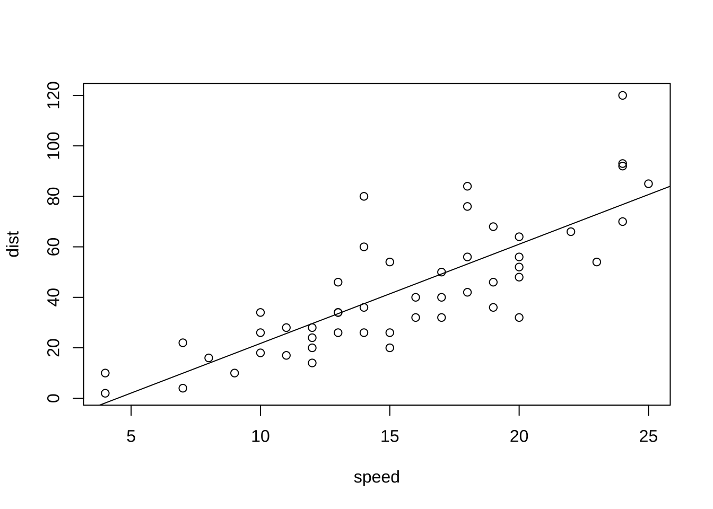
# モデル診断（残差プロット等) plot(cars_lm)\t\t 4枚表示: 残差vs Y適合値, 残差
# vs Q - Qプロット, 残差平方根 vs Y適合値, 残差 vs 影響力(てこ値とCook距離)- 予測
# 学習データに対する適合値 (内挿予測)
cars_pred <- predict(cars_lm)
# 残差
cars_resd <- residuals(cars_lm)
# 予測値 vs 残差
plot(cars_pred, cars_resd)
abline(h = 0, lty = 2)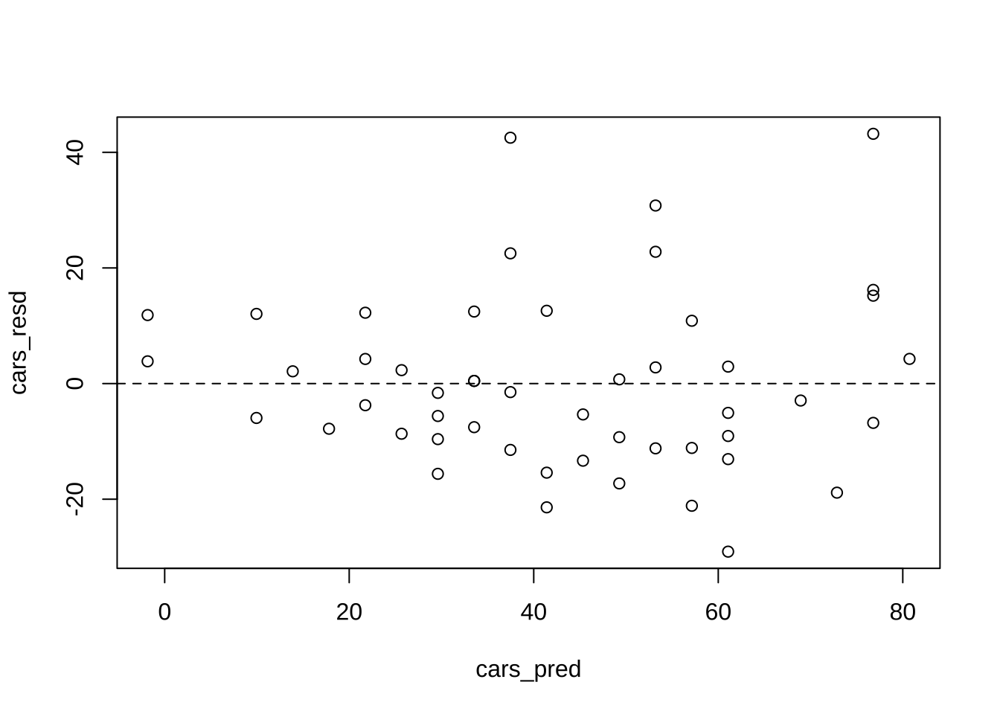
data.frame(cars, cars_pred, cars_resd)
#> speed dist cars_pred cars_resd
#> 1 4 2 -1.849460 3.849460
#> 2 4 10 -1.849460 11.849460
#> 3 7 4 9.947766 -5.947766
#> 4 7 22 9.947766 12.052234
#> 5 8 16 13.880175 2.119825
#> 6 9 10 17.812584 -7.812584
#> 7 10 18 21.744993 -3.744993
#> 8 10 26 21.744993 4.255007
#> 9 10 34 21.744993 12.255007
#> 10 11 17 25.677401 -8.677401
#> 11 11 28 25.677401 2.322599
#> 12 12 14 29.609810 -15.609810
#> 13 12 20 29.609810 -9.609810
#> 14 12 24 29.609810 -5.609810
#> 15 12 28 29.609810 -1.609810
#> 16 13 26 33.542219 -7.542219
#> 17 13 34 33.542219 0.457781
#> 18 13 34 33.542219 0.457781
#> 19 13 46 33.542219 12.457781
#> 20 14 26 37.474628 -11.474628
#> 21 14 36 37.474628 -1.474628
#> 22 14 60 37.474628 22.525372
#> 23 14 80 37.474628 42.525372
#> 24 15 20 41.407036 -21.407036
#> 25 15 26 41.407036 -15.407036
#> 26 15 54 41.407036 12.592964
#> 27 16 32 45.339445 -13.339445
#> 28 16 40 45.339445 -5.339445
#> 29 17 32 49.271854 -17.271854
#> 30 17 40 49.271854 -9.271854
#> 31 17 50 49.271854 0.728146
#> 32 18 42 53.204263 -11.204263
#> 33 18 56 53.204263 2.795737
#> 34 18 76 53.204263 22.795737
#> 35 18 84 53.204263 30.795737
#> 36 19 36 57.136672 -21.136672
#> 37 19 46 57.136672 -11.136672
#> 38 19 68 57.136672 10.863328
#> 39 20 32 61.069080 -29.069080
#> 40 20 48 61.069080 -13.069080
#> 41 20 52 61.069080 -9.069080
#> 42 20 56 61.069080 -5.069080
#> 43 20 64 61.069080 2.930920
#> 44 22 66 68.933898 -2.933898
#> 45 23 54 72.866307 -18.866307
#> 46 24 70 76.798715 -6.798715
#> 47 24 92 76.798715 15.201285
#> 48 24 93 76.798715 16.201285
#> 49 24 120 76.798715 43.201285
#> 50 25 85 80.731124 4.2688768.1.1 基本操作: 回帰木
回帰木, 分類木ともに,
パッケージrpartの関数rpart()を適用する.
library(rpart)
cars_rp <- rpart(dist ~ speed, data = cars)
summary(cars_rp) # ==> 葉3枚
#> Call:
#> rpart(formula = dist ~ speed, data = cars)
#> n= 50
#>
#> CP nsplit rel error xerror xstd
#> 1 0.4676398 0 1.0000000 1.0568962 0.2252315
#> 2 0.1104944 1 0.5323602 0.7027958 0.1707204
#> 3 0.0100000 2 0.4218658 0.5144673 0.1299685
#>
#> Variable importance
#> speed
#> 100
#>
#> Node number 1: 50 observations, complexity param=0.4676398
#> mean=42.98, MSE=650.7796
#> left son=2 (31 obs) right son=3 (19 obs)
#> Primary splits:
#> speed < 17.5 to the left, improve=0.4676398, (0 missing)
#>
#> Node number 2: 31 observations, complexity param=0.1104944
#> mean=29.32258, MSE=267.9605
#> left son=4 (15 obs) right son=5 (16 obs)
#> Primary splits:
#> speed < 12.5 to the left, improve=0.4328244, (0 missing)
#>
#> Node number 3: 19 observations
#> mean=65.26316, MSE=474.5097
#>
#> Node number 4: 15 observations
#> mean=18.2, MSE=78.42667
#>
#> Node number 5: 16 observations
#> mean=39.75, MSE=220.9375
plot(cars_rp, uniform = T, margin = 0.05)
text(cars_rp, all = T, use.n = T)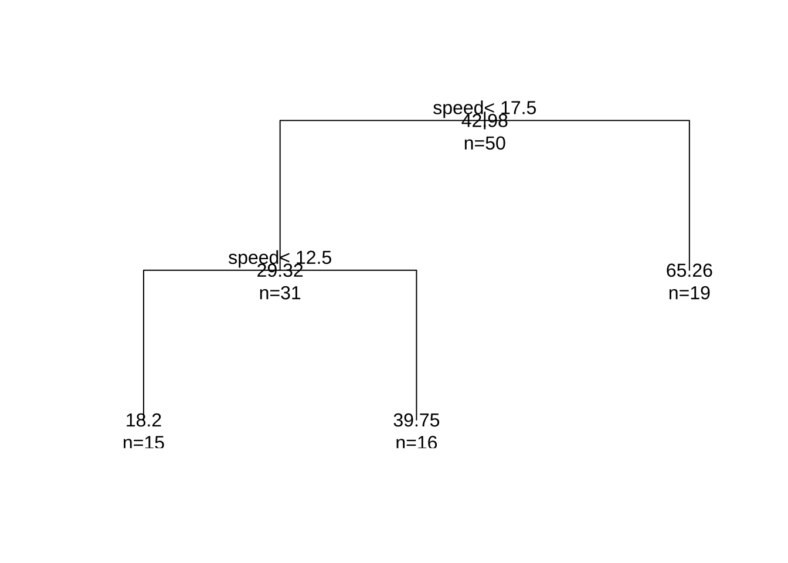
- 予測
# 学習用データに対する適合値 (内挿予測)
cars_rp_pred <- predict(cars_rp)
cars_rp_fitted <- data.frame(cars$speed, cars_rp_pred)
plot(cars$speed, cars$dist)
lines(cars_rp_fitted, type = "s")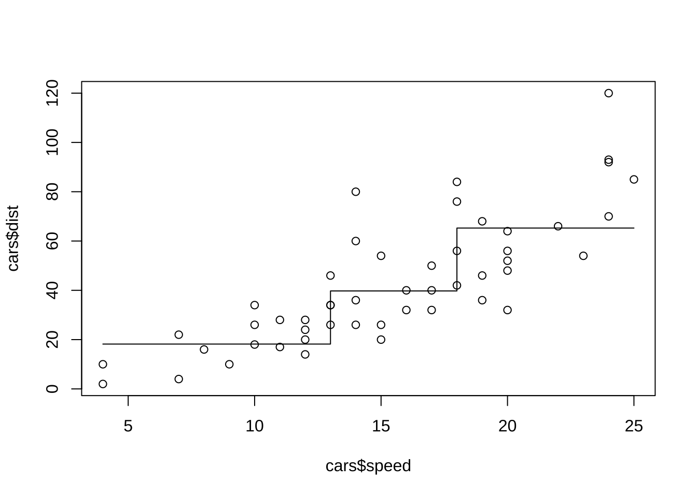
# 観測値, 線形回帰の適合値, 回帰木の適合値
data.frame(cars, cars_pred, cars_rp_fitted)
#> speed dist cars_pred cars.speed cars_rp_pred
#> 1 4 2 -1.849460 4 18.20000
#> 2 4 10 -1.849460 4 18.20000
#> 3 7 4 9.947766 7 18.20000
#> 4 7 22 9.947766 7 18.20000
#> 5 8 16 13.880175 8 18.20000
#> 6 9 10 17.812584 9 18.20000
#> 7 10 18 21.744993 10 18.20000
#> 8 10 26 21.744993 10 18.20000
#> 9 10 34 21.744993 10 18.20000
#> 10 11 17 25.677401 11 18.20000
#> 11 11 28 25.677401 11 18.20000
#> 12 12 14 29.609810 12 18.20000
#> 13 12 20 29.609810 12 18.20000
#> 14 12 24 29.609810 12 18.20000
#> 15 12 28 29.609810 12 18.20000
#> 16 13 26 33.542219 13 39.75000
#> 17 13 34 33.542219 13 39.75000
#> 18 13 34 33.542219 13 39.75000
#> 19 13 46 33.542219 13 39.75000
#> 20 14 26 37.474628 14 39.75000
#> 21 14 36 37.474628 14 39.75000
#> 22 14 60 37.474628 14 39.75000
#> 23 14 80 37.474628 14 39.75000
#> 24 15 20 41.407036 15 39.75000
#> 25 15 26 41.407036 15 39.75000
#> 26 15 54 41.407036 15 39.75000
#> 27 16 32 45.339445 16 39.75000
#> 28 16 40 45.339445 16 39.75000
#> 29 17 32 49.271854 17 39.75000
#> 30 17 40 49.271854 17 39.75000
#> 31 17 50 49.271854 17 39.75000
#> 32 18 42 53.204263 18 65.26316
#> 33 18 56 53.204263 18 65.26316
#> 34 18 76 53.204263 18 65.26316
#> 35 18 84 53.204263 18 65.26316
#> 36 19 36 57.136672 19 65.26316
#> 37 19 46 57.136672 19 65.26316
#> 38 19 68 57.136672 19 65.26316
#> 39 20 32 61.069080 20 65.26316
#> 40 20 48 61.069080 20 65.26316
#> 41 20 52 61.069080 20 65.26316
#> 42 20 56 61.069080 20 65.26316
#> 43 20 64 61.069080 20 65.26316
#> 44 22 66 68.933898 22 65.26316
#> 45 23 54 72.866307 23 65.26316
#> 46 24 70 76.798715 24 65.26316
#> 47 24 92 76.798715 24 65.26316
#> 48 24 93 76.798715 24 65.26316
#> 49 24 120 76.798715 24 65.26316
#> 50 25 85 80.731124 25 65.263168.2 回帰木
データセット2: ワイン品質データ
- winequality-white.csv
- fixed acidity: 酢酸濃度
- volitle acidity: 揮発酸濃度
- citric acidity: クエン酸濃度
- chlorides: 塩化物
- sulfur dioxide: 二酸化硫黄
- sulphate: 硫酸塩
- fixed acidity: 酒石酸含有量（g/dm3)
- volatile acidity: 酢酸含有量（g/dm3)
- citric acid: クエン酸含有量（g/dm3)
- residual sugar: 残留糖分含有量（g/dm3）
- chlorides: 塩化ナトリウム含有量（g/dm3)
- free sulfur dioxide: 遊離亜硫酸含有量（mg/dm3）
- total sulfur dioxide: 総亜硫酸含有量（mg/dm3）
- density: 密度（g/dm3)
- pH: pH
- sulphates: 硫酸カリウム含有量（g/dm3）
- alcohol: アルコール度数（% vol.）
- quality: ワインの品質 (0 (very bad) -- 10 (excellent))全データセットを学習用とテスト用にランダムに分割.
wine <- read.csv("winequality-white.csv", sep = ";", skip = 1, header = T)
set.seed(100)
smpl_idx <- sample(1:nrow(wine), 3000) # 元データ(行番号)から3000件を非復元抽出
wine_train <- wine[smpl_idx, ] # 学習用データセット
wine_test <- wine[-smpl_idx, ] # テスト用データセット
str(wine)
#> 'data.frame': 4898 obs. of 12 variables:
#> $ fixed.acidity : num 7 6.3 8.1 7.2 7.2 8.1 6.2 7 6.3 8.1 ...
#> $ volatile.acidity : num 0.27 0.3 0.28 0.23 0.23 0.28 0.32 0.27 0.3 0.22 ...
#> $ citric.acid : num 0.36 0.34 0.4 0.32 0.32 0.4 0.16 0.36 0.34 0.43 ...
#> $ residual.sugar : num 20.7 1.6 6.9 8.5 8.5 6.9 7 20.7 1.6 1.5 ...
#> $ chlorides : num 0.045 0.049 0.05 0.058 0.058 0.05 0.045 0.045 0.049 0.044 ...
#> $ free.sulfur.dioxide : num 45 14 30 47 47 30 30 45 14 28 ...
#> $ total.sulfur.dioxide: num 170 132 97 186 186 97 136 170 132 129 ...
#> $ density : num 1.001 0.994 0.995 0.996 0.996 ...
#> $ pH : num 3 3.3 3.26 3.19 3.19 3.26 3.18 3 3.3 3.22 ...
#> $ sulphates : num 0.45 0.49 0.44 0.4 0.4 0.44 0.47 0.45 0.49 0.45 ...
#> $ alcohol : num 8.8 9.5 10.1 9.9 9.9 10.1 9.6 8.8 9.5 11 ...
#> $ quality : int 6 6 6 6 6 6 6 6 6 6 ...
hist(wine$quality)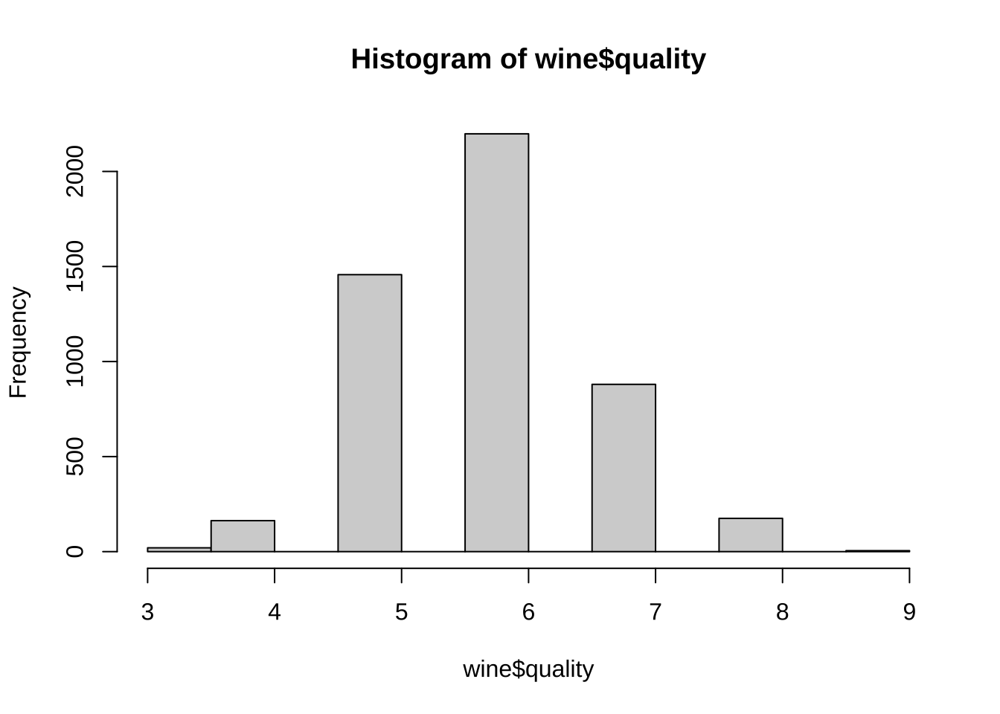
library(rpart)
wine_rp <- rpart(quality ~ ., data = wine_train) # quality以外の変数を説明変数に使用
wine_rp
#> n= 3000
#>
#> node), split, n, deviance, yval
#> * denotes terminal node
#>
#> 1) root 3000 2320.0400 5.880333
#> 2) alcohol< 10.85 1883 1106.7690 5.612852
#> 4) volatile.acidity>=0.2525 985 464.4934 5.358376 *
#> 5) volatile.acidity< 0.2525 898 508.5223 5.891982
#> 10) volatile.acidity>=0.2075 437 217.9405 5.720824 *
#> 11) volatile.acidity< 0.2075 461 265.6443 6.054230
#> 22) residual.sugar< 12.575 369 183.0244 5.926829 *
#> 23) residual.sugar>=12.575 92 52.6087 6.565217 *
#> 3) alcohol>=10.85 1117 851.4396 6.331244
#> 6) free.sulfur.dioxide< 11.5 66 67.5303 5.378788 *
#> 7) free.sulfur.dioxide>=11.5 1051 720.2759 6.391056
#> 14) alcohol< 12.45 795 512.6717 6.275472 *
#> 15) alcohol>=12.45 256 164.0000 6.750000 *
# 可視化
library(rpart.plot)
rpart.plot(wine_rp, digit = 3)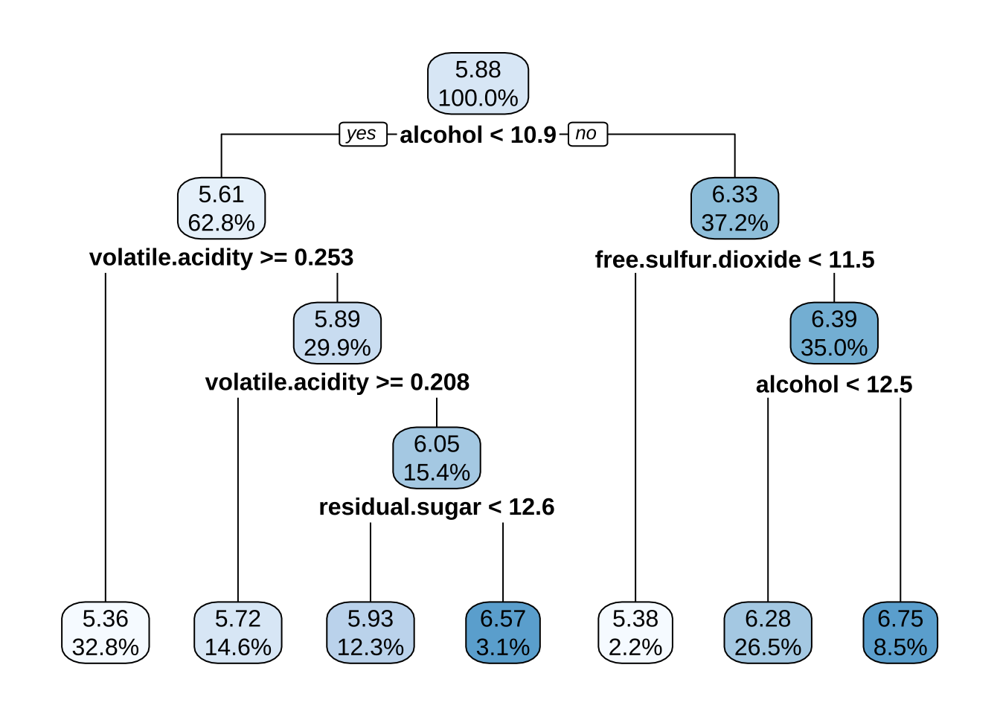
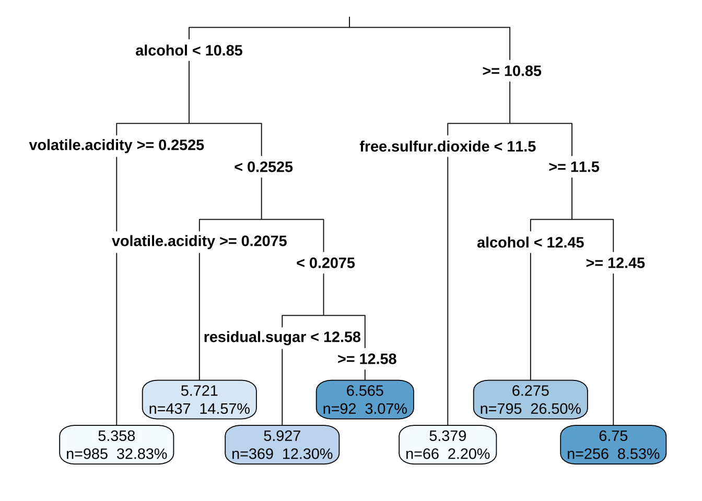
# 学習データによる予測の精度
wine_rp_train <- predict(wine_rp)
cor(wine_rp_train, wine_train$quality)
#> [1] 0.5324631
printcp(wine_rp)
#>
#> Regression tree:
#> rpart(formula = quality ~ ., data = wine_train)
#>
#> Variables actually used in tree construction:
#> [1] alcohol free.sulfur.dioxide residual.sugar
#> [4] volatile.acidity
#>
#> Root node error: 2320/3000 = 0.77335
#>
#> n= 3000
#>
#> CP nsplit rel error xerror xstd
#> 1 0.155959 0 1.00000 1.00109 0.027711
#> 2 0.057651 1 0.84404 0.84827 0.026277
#> 3 0.027428 2 0.78639 0.80140 0.025794
#> 4 0.018795 3 0.75896 0.77812 0.024591
#> 5 0.011842 4 0.74017 0.75908 0.024127
#> 6 0.010000 6 0.71648 0.74854 0.023784
plotcp(wine_rp)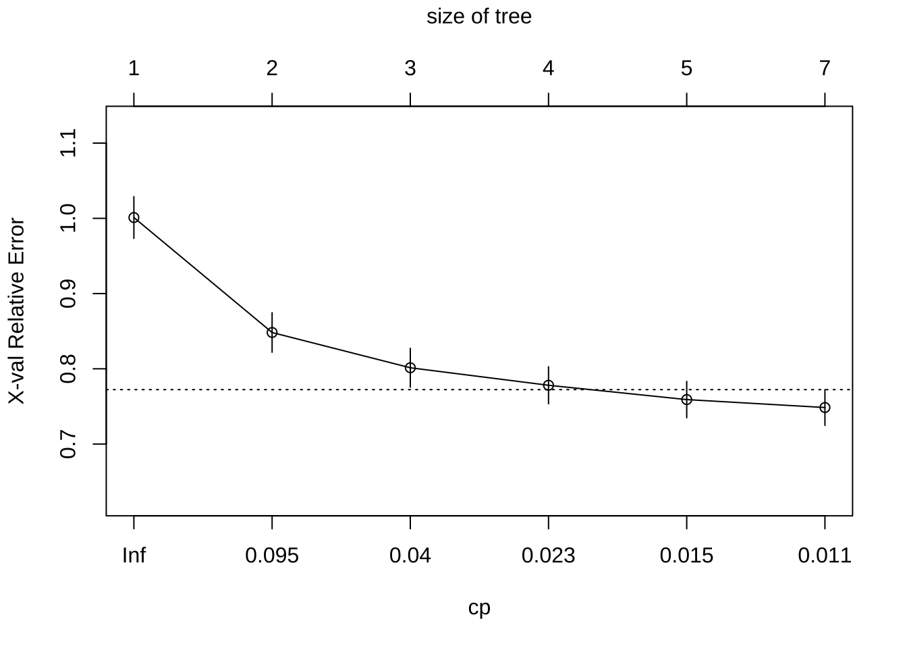
# 手動による剪定例 (complex parameter(cp)の大きさに基づいて)
wine_rp1 <- prune(wine_rp, cp = 0.03)
plot(wine_rp1, uniform = T, margin = 0.05)
text(wine_rp1, all = T, use.n = T)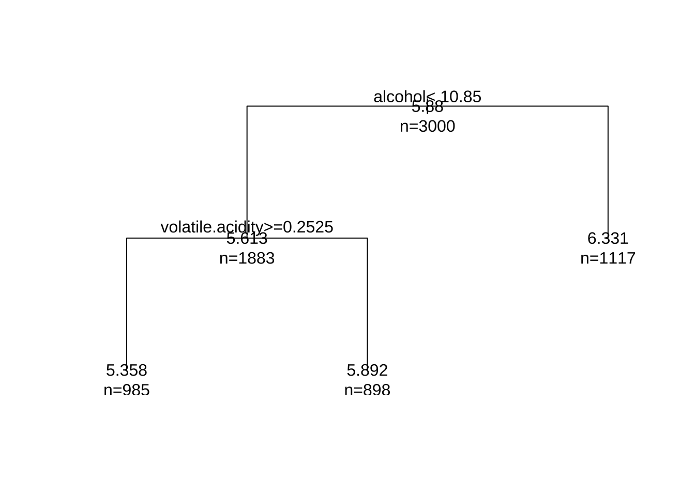
8.3 分類木
データセット3: 自動車評価データ
- car.data.txt
- Class (評価, 4水準), unacc, acc, good, vgood
- buying (価格帯, 4): vhigh, high, med, low.
- maint (維持費, 4): vhigh, high, med, low.
- doors (ドア数, 4): 2, 3, 4, 5more.
- persons (乗車人数, 3): 2, 4, more.
- lug_boot (収納性, 3): small, med, big.
- safety (安全性, 3): low, med, high.
- source: https://archive.ics.uci.edu/ml/datasets/Car+Evaluation
- 注) factorの並び (Levels) はデフォルトではアルファベット順library(rpart)
cardata0 <- read.csv("car.data.txt", skip = 6)
attach(cardata0)
# factorの並び(Levels)はデフォルトではアルファベット順 →
# 好ましくない～好ましいの順に, 並べ替え
評価 <- factor(Class, levels = c("unacc", "acc", "good", "vgood"))
価格帯 <- factor(buying, levels = c("vhigh", "high", "med", "low"))
維持費 <- factor(maint, levels = c("vhigh", "high", "med", "low"))
ドア数 <- factor(doors, levels = c("2", "3", "4", "5more"))
乗車人数 <- factor(persons, levels = c("2", "4", "more"))
収納性 <- factor(lug_boot, levels = c("small", "med", "big"))
安全性 <- factor(safety, levels = c("low", "med", "high"))
#
cardata1 <- data.frame(評価, 価格帯, 維持費, ドア数, 乗車人数, 収納性,
安全性)
head(cardata1)
#> 評価 価格帯 維持費 ドア数 乗車人数 収納性 安全性
#> 1 unacc vhigh vhigh 2 2 small low
#> 2 unacc vhigh vhigh 2 2 small med
#> 3 unacc vhigh vhigh 2 2 small high
#> 4 unacc vhigh vhigh 2 2 med low
#> 5 unacc vhigh vhigh 2 2 med med
#> 6 unacc vhigh vhigh 2 2 med high# 元データを, 学習用データとテスト用データに分割
# 学習用データでモデルに学習させる
set.seed(100)
smpl_idx <- sample(1:nrow(cardata1), 1500) # 元データ(行番号)から1500件を非復元抽出
car_train <- cardata1[smpl_idx, ] # 学習用データセット, 1500件
car_test <- cardata1[-smpl_idx, ] # テスト用データセット, 残り学習用データセットで訓練(学習).
cardata <- car_train
table(cardata[, c("評価", "価格帯")])
#> 価格帯
#> 評価 vhigh high med low
#> unacc 307 281 239 221
#> acc 65 92 94 79
#> good 0 0 20 40
#> vgood 0 0 24 38
table(cardata[, c("評価", "維持費")])
#> 維持費
#> 評価 vhigh high med low
#> unacc 310 270 235 233
#> acc 60 89 102 79
#> good 0 0 22 38
#> vgood 0 12 25 25
table(cardata[, c("評価", "ドア数")])
#> ドア数
#> 評価 2 3 4 5more
#> unacc 282 263 255 248
#> acc 74 82 86 88
#> good 14 15 16 15
#> vgood 10 13 19 20
table(cardata[, c("評価", "乗車人数")])
#> 乗車人数
#> 評価 2 4 more
#> unacc 494 283 271
#> acc 0 169 161
#> good 0 31 29
#> vgood 0 29 33
table(cardata[, c("評価", "収納性")]) # balanced
#> 収納性
#> 評価 small med big
#> unacc 393 341 314
#> acc 94 112 124
#> good 18 24 18
#> vgood 0 24 38res_rp <- rpart(評価 ~ ., data = cardata)
summary(res_rp)
#> Call:
#> rpart(formula = 評価 ~ ., data = cardata)
#> n= 1500
#>
#> CP nsplit rel error xerror xstd
#> 1 0.12389381 0 1.0000000 1.0000000 0.03931568
#> 2 0.11283186 2 0.7522124 0.9181416 0.03833142
#> 3 0.04535398 4 0.5265487 0.5265487 0.03130647
#> 4 0.03982301 6 0.4358407 0.4889381 0.03037018
#> 5 0.03097345 7 0.3960177 0.4137168 0.02830539
#> 6 0.02876106 9 0.3340708 0.3805310 0.02730104
#> 7 0.02101770 10 0.3053097 0.3429204 0.02608212
#> 8 0.01880531 12 0.2632743 0.3163717 0.02516366
#> 9 0.01327434 14 0.2256637 0.2389381 0.02214866
#> 10 0.01000000 16 0.1991150 0.2212389 0.02137371
#>
#> Variable importance
#> 安全性 乗車人数 維持費 収納性 価格帯 ドア数
#> 30 28 20 10 10 1
#>
#> Node number 1: 1500 observations, complexity param=0.1238938
#> predicted class=unacc expected loss=0.3013333 P(node) =1
#> class counts: 1048 330 60 62
#> probabilities: 0.699 0.220 0.040 0.041
#> left son=2 (508 obs) right son=3 (992 obs)
#> Primary splits:
#> 安全性 splits as LRR, improve=109.468500, (0 missing)
#> 乗車人数 splits as LRR, improve=104.970300, (0 missing)
#> 価格帯 splits as LLRR, improve= 17.172040, (0 missing)
#> 維持費 splits as LLRR, improve= 14.140400, (0 missing)
#> 収納性 splits as LRR, improve= 7.005849, (0 missing)
#>
#> Node number 2: 508 observations
#> predicted class=unacc expected loss=0 P(node) =0.3386667
#> class counts: 508 0 0 0
#> probabilities: 1.000 0.000 0.000 0.000
#>
#> Node number 3: 992 observations, complexity param=0.1238938
#> predicted class=unacc expected loss=0.4556452 P(node) =0.6613333
#> class counts: 540 330 60 62
#> probabilities: 0.544 0.333 0.060 0.062
#> left son=6 (322 obs) right son=7 (670 obs)
#> Primary splits:
#> 乗車人数 splits as LRR, improve=155.34520, (0 missing)
#> 価格帯 splits as LLRR, improve= 26.05666, (0 missing)
#> 維持費 splits as LLRR, improve= 19.14227, (0 missing)
#> 安全性 splits as -LR, improve= 11.33566, (0 missing)
#> 収納性 splits as LRR, improve= 11.03210, (0 missing)
#>
#> Node number 6: 322 observations
#> predicted class=unacc expected loss=0 P(node) =0.2146667
#> class counts: 322 0 0 0
#> probabilities: 1.000 0.000 0.000 0.000
#>
#> Node number 7: 670 observations, complexity param=0.1128319
#> predicted class=acc expected loss=0.5074627 P(node) =0.4466667
#> class counts: 218 330 60 62
#> probabilities: 0.325 0.493 0.090 0.093
#> left son=14 (333 obs) right son=15 (337 obs)
#> Primary splits:
#> 価格帯 splits as LLRR, improve=38.596470, (0 missing)
#> 維持費 splits as LLRR, improve=29.807250, (0 missing)
#> 収納性 splits as LRR, improve=17.341050, (0 missing)
#> 安全性 splits as -LR, improve=15.372940, (0 missing)
#> ドア数 splits as LRRR, improve= 4.288712, (0 missing)
#> Surrogate splits:
#> ドア数 splits as RLRR, agree=0.516, adj=0.027, (0 split)
#> 安全性 splits as -LR, agree=0.510, adj=0.015, (0 split)
#> 乗車人数 splits as -LR, agree=0.509, adj=0.012, (0 split)
#> 維持費 splits as RRRL, agree=0.507, adj=0.009, (0 split)
#> 収納性 splits as LRR, agree=0.504, adj=0.003, (0 split)
#>
#> Node number 14: 333 observations, complexity param=0.1128319
#> predicted class=unacc expected loss=0.4714715 P(node) =0.222
#> class counts: 176 157 0 0
#> probabilities: 0.529 0.471 0.000 0.000
#> left son=28 (162 obs) right son=29 (171 obs)
#> Primary splits:
#> 維持費 splits as LLRR, improve=51.712340, (0 missing)
#> 収納性 splits as LRR, improve=14.322380, (0 missing)
#> 安全性 splits as -LR, improve=12.358880, (0 missing)
#> 価格帯 splits as LR--, improve= 5.866990, (0 missing)
#> ドア数 splits as LRRR, improve= 2.000571, (0 missing)
#> Surrogate splits:
#> ドア数 splits as RRLR, agree=0.520, adj=0.012, (0 split)
#> 収納性 splits as LRR, agree=0.517, adj=0.006, (0 split)
#>
#> Node number 15: 337 observations, complexity param=0.04535398
#> predicted class=acc expected loss=0.4866469 P(node) =0.2246667
#> class counts: 42 173 60 62
#> probabilities: 0.125 0.513 0.178 0.184
#> left son=30 (166 obs) right son=31 (171 obs)
#> Primary splits:
#> 維持費 splits as LLRR, improve=30.432380, (0 missing)
#> 安全性 splits as -LR, improve=15.159790, (0 missing)
#> 収納性 splits as LRR, improve=10.848300, (0 missing)
#> 価格帯 splits as --LR, improve= 2.920132, (0 missing)
#> ドア数 splits as LRRR, improve= 2.729825, (0 missing)
#> Surrogate splits:
#> ドア数 splits as RRRL, agree=0.513, adj=0.012, (0 split)
#> 収納性 splits as LRR, agree=0.513, adj=0.012, (0 split)
#> 安全性 splits as -LR, agree=0.513, adj=0.012, (0 split)
#>
#> Node number 28: 162 observations, complexity param=0.0210177
#> predicted class=unacc expected loss=0.1851852 P(node) =0.108
#> class counts: 132 30 0 0
#> probabilities: 0.815 0.185 0.000 0.000
#> left son=56 (82 obs) right son=57 (80 obs)
#> Primary splits:
#> 価格帯 splits as LR--, improve=11.3888900, (0 missing)
#> 維持費 splits as LR--, improve=10.8401100, (0 missing)
#> 収納性 splits as LLR, improve= 1.9067460, (0 missing)
#> 安全性 splits as -LR, improve= 0.9437920, (0 missing)
#> ドア数 splits as LLRR, improve= 0.2358401, (0 missing)
#> Surrogate splits:
#> 収納性 splits as LLR, agree=0.531, adj=0.050, (0 split)
#> ドア数 splits as LRLR, agree=0.519, adj=0.025, (0 split)
#>
#> Node number 29: 171 observations, complexity param=0.03097345
#> predicted class=acc expected loss=0.2573099 P(node) =0.114
#> class counts: 44 127 0 0
#> probabilities: 0.257 0.743 0.000 0.000
#> left son=58 (57 obs) right son=59 (114 obs)
#> Primary splits:
#> 収納性 splits as LRR, improve=15.81287000, (0 missing)
#> 安全性 splits as -LR, improve=14.94250000, (0 missing)
#> ドア数 splits as LRRR, improve= 3.05237700, (0 missing)
#> 乗車人数 splits as -RL, improve= 0.05959792, (0 missing)
#> 価格帯 splits as LR--, improve= 0.05664293, (0 missing)
#>
#> Node number 30: 166 observations, complexity param=0.01880531
#> predicted class=acc expected loss=0.2831325 P(node) =0.1106667
#> class counts: 35 119 0 12
#> probabilities: 0.211 0.717 0.000 0.072
#> left son=60 (58 obs) right son=61 (108 obs)
#> Primary splits:
#> 収納性 splits as LRR, improve=7.922795, (0 missing)
#> 安全性 splits as -LR, improve=7.674699, (0 missing)
#> ドア数 splits as LRRR, improve=2.069439, (0 missing)
#> 維持費 splits as LR--, improve=1.602410, (0 missing)
#> 価格帯 splits as --LR, improve=1.284737, (0 missing)
#>
#> Node number 31: 171 observations, complexity param=0.04535398
#> predicted class=good expected loss=0.6491228 P(node) =0.114
#> class counts: 7 54 60 50
#> probabilities: 0.041 0.316 0.351 0.292
#> left son=62 (81 obs) right son=63 (90 obs)
#> Primary splits:
#> 安全性 splits as -LR, improve=22.499420, (0 missing)
#> 収納性 splits as LRR, improve=12.487990, (0 missing)
#> 維持費 splits as --LR, improve= 4.316887, (0 missing)
#> 価格帯 splits as --LR, improve= 3.767329, (0 missing)
#> ドア数 splits as LRRR, improve= 1.797828, (0 missing)
#> Surrogate splits:
#> ドア数 splits as RRLR, agree=0.538, adj=0.025, (0 split)
#>
#> Node number 56: 82 observations
#> predicted class=unacc expected loss=0 P(node) =0.05466667
#> class counts: 82 0 0 0
#> probabilities: 1.000 0.000 0.000 0.000
#>
#> Node number 57: 80 observations, complexity param=0.0210177
#> predicted class=unacc expected loss=0.375 P(node) =0.05333333
#> class counts: 50 30 0 0
#> probabilities: 0.625 0.375 0.000 0.000
#> left son=114 (39 obs) right son=115 (41 obs)
#> Primary splits:
#> 維持費 splits as LR--, improve=21.40244000, (0 missing)
#> 収納性 splits as LLR, improve= 2.65723300, (0 missing)
#> 安全性 splits as -LR, improve= 1.91526000, (0 missing)
#> ドア数 splits as LLRR, improve= 0.56441530, (0 missing)
#> 乗車人数 splits as -LR, improve= 0.05639098, (0 missing)
#> Surrogate splits:
#> 収納性 splits as RLR, agree=0.562, adj=0.103, (0 split)
#> ドア数 splits as RLRR, agree=0.525, adj=0.026, (0 split)
#>
#> Node number 58: 57 observations, complexity param=0.03097345
#> predicted class=unacc expected loss=0.4385965 P(node) =0.038
#> class counts: 32 25 0 0
#> probabilities: 0.561 0.439 0.000 0.000
#> left son=116 (28 obs) right son=117 (29 obs)
#> Primary splits:
#> 安全性 splits as -LR, improve=21.17362000, (0 missing)
#> ドア数 splits as LRRR, improve= 1.20350900, (0 missing)
#> 乗車人数 splits as -RL, improve= 1.03815600, (0 missing)
#> 維持費 splits as --RL, improve= 0.09980507, (0 missing)
#> 価格帯 splits as LR--, improve= 0.05032432, (0 missing)
#> Surrogate splits:
#> 価格帯 splits as LR--, agree=0.526, adj=0.036, (0 split)
#> 維持費 splits as --RL, agree=0.526, adj=0.036, (0 split)
#> ドア数 splits as RRLR, agree=0.526, adj=0.036, (0 split)
#> 乗車人数 splits as -RL, agree=0.526, adj=0.036, (0 split)
#>
#> Node number 59: 114 observations
#> predicted class=acc expected loss=0.1052632 P(node) =0.076
#> class counts: 12 102 0 0
#> probabilities: 0.105 0.895 0.000 0.000
#>
#> Node number 60: 58 observations, complexity param=0.01880531
#> predicted class=acc expected loss=0.4482759 P(node) =0.03866667
#> class counts: 26 32 0 0
#> probabilities: 0.448 0.552 0.000 0.000
#> left son=120 (29 obs) right son=121 (29 obs)
#> Primary splits:
#> 安全性 splits as -LR, improve=13.7931000, (0 missing)
#> 維持費 splits as LR--, improve= 2.2068970, (0 missing)
#> ドア数 splits as LRRR, improve= 1.9956380, (0 missing)
#> 価格帯 splits as --LR, improve= 0.8277504, (0 missing)
#> 乗車人数 splits as -RL, improve= 0.3325123, (0 missing)
#> Surrogate splits:
#> 維持費 splits as LR--, agree=0.552, adj=0.103, (0 split)
#> ドア数 splits as LLRR, agree=0.534, adj=0.069, (0 split)
#>
#> Node number 61: 108 observations
#> predicted class=acc expected loss=0.1944444 P(node) =0.072
#> class counts: 9 87 0 12
#> probabilities: 0.083 0.806 0.000 0.111
#>
#> Node number 62: 81 observations, complexity param=0.02876106
#> predicted class=acc expected loss=0.4444444 P(node) =0.054
#> class counts: 3 45 33 0
#> probabilities: 0.037 0.556 0.407 0.000
#> left son=124 (28 obs) right son=125 (53 obs)
#> Primary splits:
#> 収納性 splits as LRR, improve=12.1816400, (0 missing)
#> 価格帯 splits as --LR, improve= 2.6916900, (0 missing)
#> 維持費 splits as --LR, improve= 2.2466560, (0 missing)
#> ドア数 splits as LLRR, improve= 1.5350200, (0 missing)
#> 乗車人数 splits as -RL, improve= 0.5724932, (0 missing)
#>
#> Node number 63: 90 observations, complexity param=0.03982301
#> predicted class=vgood expected loss=0.4444444 P(node) =0.06
#> class counts: 4 9 27 50
#> probabilities: 0.044 0.100 0.300 0.556
#> left son=126 (28 obs) right son=127 (62 obs)
#> Primary splits:
#> 収納性 splits as LRR, improve=18.2472100, (0 missing)
#> ドア数 splits as LLRR, improve= 3.1671560, (0 missing)
#> 維持費 splits as --LR, improve= 1.8000000, (0 missing)
#> 価格帯 splits as --LR, improve= 1.4888890, (0 missing)
#> 乗車人数 splits as -RL, improve= 0.6274484, (0 missing)
#>
#> Node number 114: 39 observations
#> predicted class=unacc expected loss=0 P(node) =0.026
#> class counts: 39 0 0 0
#> probabilities: 1.000 0.000 0.000 0.000
#>
#> Node number 115: 41 observations
#> predicted class=acc expected loss=0.2682927 P(node) =0.02733333
#> class counts: 11 30 0 0
#> probabilities: 0.268 0.732 0.000 0.000
#>
#> Node number 116: 28 observations
#> predicted class=unacc expected loss=0 P(node) =0.01866667
#> class counts: 28 0 0 0
#> probabilities: 1.000 0.000 0.000 0.000
#>
#> Node number 117: 29 observations
#> predicted class=acc expected loss=0.137931 P(node) =0.01933333
#> class counts: 4 25 0 0
#> probabilities: 0.138 0.862 0.000 0.000
#>
#> Node number 120: 29 observations
#> predicted class=unacc expected loss=0.2068966 P(node) =0.01933333
#> class counts: 23 6 0 0
#> probabilities: 0.793 0.207 0.000 0.000
#>
#> Node number 121: 29 observations
#> predicted class=acc expected loss=0.1034483 P(node) =0.01933333
#> class counts: 3 26 0 0
#> probabilities: 0.103 0.897 0.000 0.000
#>
#> Node number 124: 28 observations
#> predicted class=acc expected loss=0.1071429 P(node) =0.01866667
#> class counts: 3 25 0 0
#> probabilities: 0.107 0.893 0.000 0.000
#>
#> Node number 125: 53 observations, complexity param=0.01327434
#> predicted class=good expected loss=0.3773585 P(node) =0.03533333
#> class counts: 0 20 33 0
#> probabilities: 0.000 0.377 0.623 0.000
#> left son=250 (25 obs) right son=251 (28 obs)
#> Primary splits:
#> 価格帯 splits as --LR, improve=4.69137500, (0 missing)
#> 維持費 splits as --LR, improve=2.97708900, (0 missing)
#> ドア数 splits as LRRR, improve=2.68221700, (0 missing)
#> 収納性 splits as -LR, improve=1.42290200, (0 missing)
#> 乗車人数 splits as -LR, improve=0.04851752, (0 missing)
#> Surrogate splits:
#> 維持費 splits as --RL, agree=0.547, adj=0.04, (0 split)
#>
#> Node number 126: 28 observations
#> predicted class=good expected loss=0.3571429 P(node) =0.01866667
#> class counts: 4 6 18 0
#> probabilities: 0.143 0.214 0.643 0.000
#>
#> Node number 127: 62 observations
#> predicted class=vgood expected loss=0.1935484 P(node) =0.04133333
#> class counts: 0 3 9 50
#> probabilities: 0.000 0.048 0.145 0.806
#>
#> Node number 250: 25 observations, complexity param=0.01327434
#> predicted class=acc expected loss=0.4 P(node) =0.01666667
#> class counts: 0 15 10 0
#> probabilities: 0.000 0.600 0.400 0.000
#> left son=500 (12 obs) right son=501 (13 obs)
#> Primary splits:
#> 維持費 splits as --LR, improve=7.38461500, (0 missing)
#> ドア数 splits as LLRR, improve=0.63636360, (0 missing)
#> 収納性 splits as -LR, improve=0.11688310, (0 missing)
#> 乗車人数 splits as -LR, improve=0.05194805, (0 missing)
#> Surrogate splits:
#> ドア数 splits as RRLR, agree=0.56, adj=0.083, (0 split)
#> 収納性 splits as -RL, agree=0.56, adj=0.083, (0 split)
#>
#> Node number 251: 28 observations
#> predicted class=good expected loss=0.1785714 P(node) =0.01866667
#> class counts: 0 5 23 0
#> probabilities: 0.000 0.179 0.821 0.000
#>
#> Node number 500: 12 observations
#> predicted class=acc expected loss=0 P(node) =0.008
#> class counts: 0 12 0 0
#> probabilities: 0.000 1.000 0.000 0.000
#>
#> Node number 501: 13 observations
#> predicted class=good expected loss=0.2307692 P(node) =0.008666667
#> class counts: 0 3 10 0
#> probabilities: 0.000 0.231 0.769 0.000
plot(res_rp, uniform = T, margin = 0.03) # → 美しくない
text(res_rp, all = T, use.n = T) # → 美しくない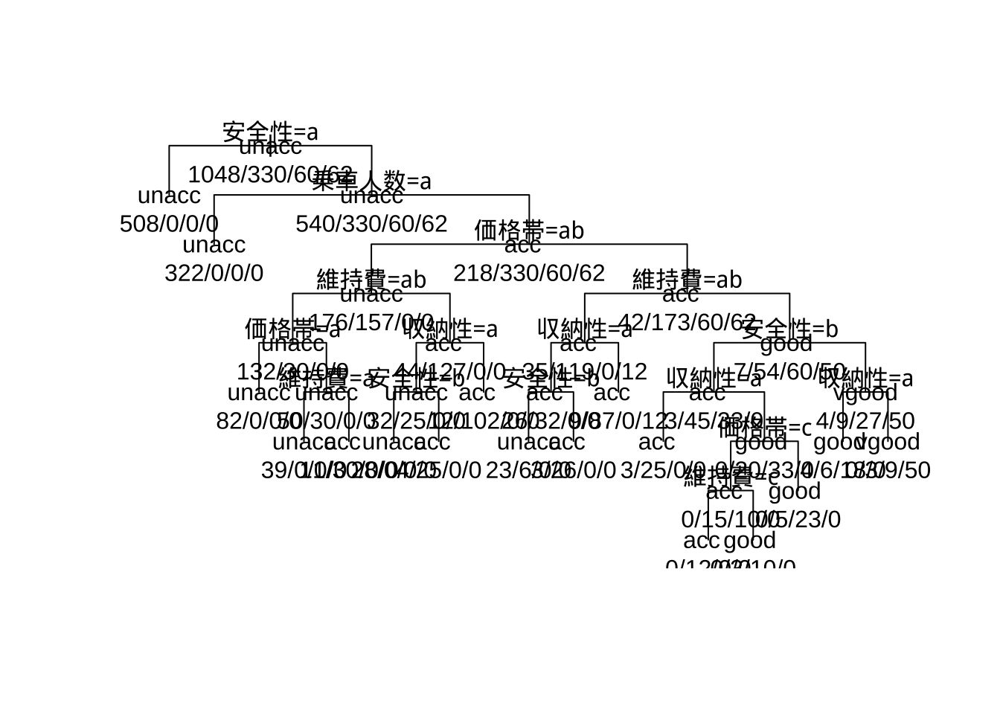
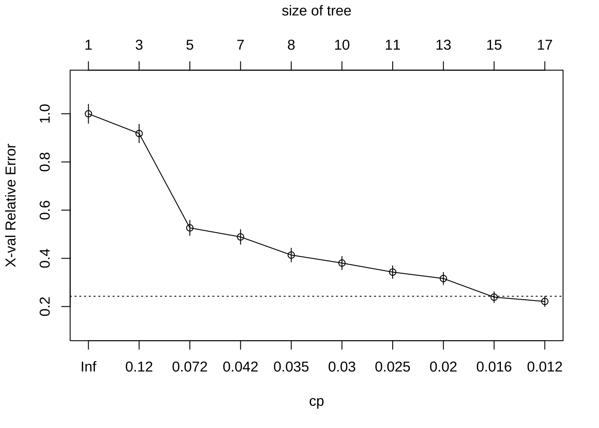
# res.pred <- predict(res.rpart) head(res.pred); tail(res.pred) res.pred.1 <-
# apply(res.pred, 1, which.max)library(rpart.plot)
res.rp <- rpart(評価 ~ ., data = cardata, control = rpart.control(cp = 0.1))
rpart.plot(res_rp, digit = 3) #, col = c('red', 'orange', 'yellow', 'blue'))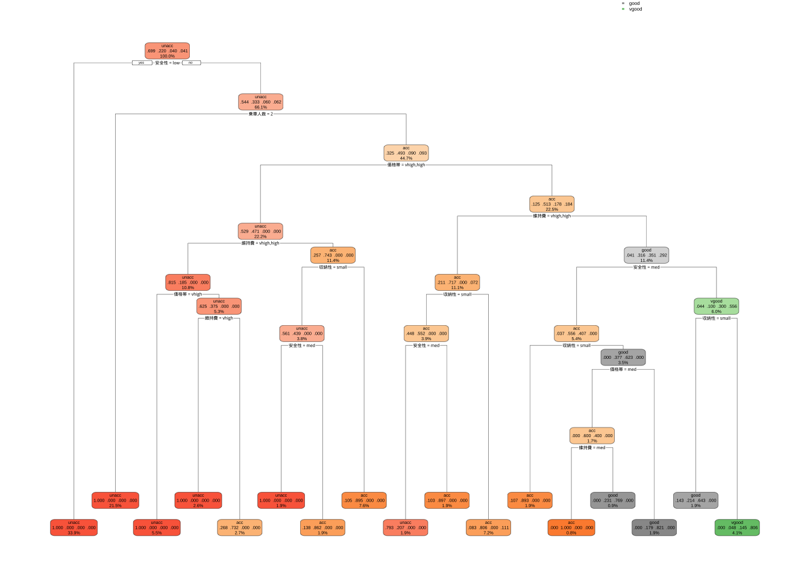
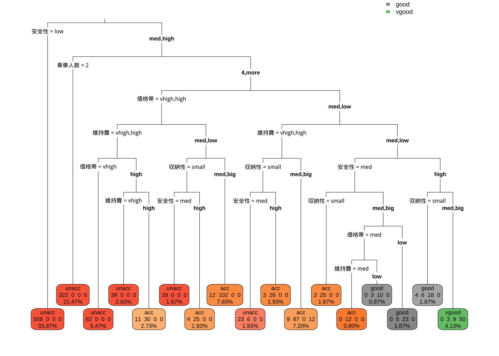
学習済モデルを使い, テスト用データで外挿予測のパフォーマンスを評価する.
car_rp_pred <- predict(res_rp, car_test, type = "class") # クラス分類の予測結果出力
# car_rp_pred <- predict(res_rp, car_test, type = 'prob')\t# 確率の出力パッケージcaretの関数confusionMatrix()を使って,
混同行列より各種評価指標を計算する.
2種類の表示モードで結果を示す:
- 適合率 (precision) - 再現率 (recall) 表示
- 感度(sensitivity) - 特異度 (specificity) 表示
# 混同行列
tbl_rp <- table(car_rp_pred, car_test$評価)
library(caret)
# 適合率 (precision) - 再現率 (recall) 表示
confusionMatrix(tbl_rp, mode = "prec_recall")
#> Confusion Matrix and Statistics
#>
#>
#> car_rp_pred unacc acc good vgood
#> unacc 159 1 0 0
#> acc 3 51 0 1
#> good 0 2 9 0
#> vgood 0 0 0 2
#>
#> Overall Statistics
#>
#> Accuracy : 0.9693
#> 95% CI : (0.9378, 0.9876)
#> No Information Rate : 0.7105
#> P-Value [Acc > NIR] : < 2.2e-16
#>
#> Kappa : 0.9306
#>
#> Mcnemar's Test P-Value : NA
#>
#> Statistics by Class:
#>
#> Class: unacc Class: acc Class: good Class: vgood
#> Precision 0.9938 0.9273 0.81818 1.000000
#> Recall 0.9815 0.9444 1.00000 0.666667
#> F1 0.9876 0.9358 0.90000 0.800000
#> Prevalence 0.7105 0.2368 0.03947 0.013158
#> Detection Rate 0.6974 0.2237 0.03947 0.008772
#> Detection Prevalence 0.7018 0.2412 0.04825 0.008772
#> Balanced Accuracy 0.9832 0.9607 0.99543 0.833333
# 感度(sensitivity) - 特異度 (specificity) 表示
confusionMatrix(tbl_rp) # mode = 'sens_spec' (デフォルト)
#> Confusion Matrix and Statistics
#>
#>
#> car_rp_pred unacc acc good vgood
#> unacc 159 1 0 0
#> acc 3 51 0 1
#> good 0 2 9 0
#> vgood 0 0 0 2
#>
#> Overall Statistics
#>
#> Accuracy : 0.9693
#> 95% CI : (0.9378, 0.9876)
#> No Information Rate : 0.7105
#> P-Value [Acc > NIR] : < 2.2e-16
#>
#> Kappa : 0.9306
#>
#> Mcnemar's Test P-Value : NA
#>
#> Statistics by Class:
#>
#> Class: unacc Class: acc Class: good Class: vgood
#> Sensitivity 0.9815 0.9444 1.00000 0.666667
#> Specificity 0.9848 0.9770 0.99087 1.000000
#> Pos Pred Value 0.9938 0.9273 0.81818 1.000000
#> Neg Pred Value 0.9559 0.9827 1.00000 0.995575
#> Prevalence 0.7105 0.2368 0.03947 0.013158
#> Detection Rate 0.6974 0.2237 0.03947 0.008772
#> Detection Prevalence 0.7018 0.2412 0.04825 0.008772
#> Balanced Accuracy 0.9832 0.9607 0.99543 0.833333パッケージcaretは, 多種多様な機械学習アルゴリズムを統一的な環境で 実行し比較できる環境を提供する. サポートベクターマシン (SVM), 勾配ブースティング, ランダムフォレスト, ニューラルネット, …, など多様な手法・アルゴリズムをサポートする.